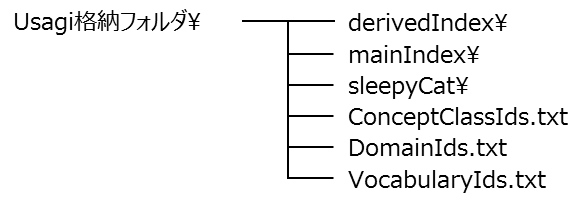
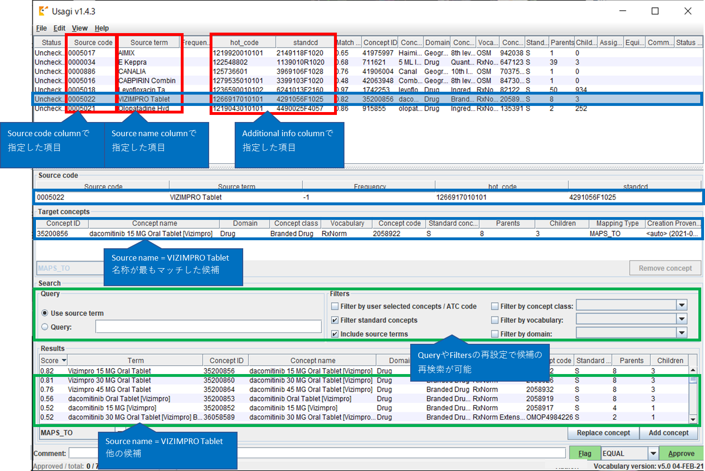

Usagiは独自に定義した各種項目（薬品、病名など）をCONCEPTテーブルへマッピングするための補助ツールとなります。
AthenaサイトからダウンロードしたCONCEPTテーブルや、マッピング元となるローカルデータを入力として、それらを紐づけたCSVファイル「SOURCE_TO_CONCEPT_MAP」を出力できます。
※当手順では、マッピング元となるデータについて、以下の呼称を用います。
ソースデータ
元システムで登録・利用されているデータ群。
ソースコード
元システムで薬品名・病名などに付与されている管理番号。
ソースネーム
元システムの薬品名・病名などを英訳した名称。マッピング対象となる項目。
マッピング操作の流れを下記に示します。 詳細な手順は各ボックス下部に記載されている章を参照してください。
Usagiを利用するにあたり、下記のCONEPT、およびVOCABULARYの情報が必要となるため、Athenaサイトで取得します。
取得した以下４つのファイルは任意のフォルダにまとめて格納します。
CONCEPT.CSV
CONCEPTのコードと名称、その他の関連情報を定義
CONCEPT_SYNONYM.CSV
CONCEPTの別名と説明を定義
VOCABULARY.CSV
VOCABULARYのコードと名称、その他の関連情報を定義
CONCEPT_RELATIONSHIP.CSV
任意の2つのCONCEPT間の直接的な関係と、関係の性質またはタイプを定義
※Athenaサイトで内容の更新があった場合は、都度、取得をしてください。
CONCEPTテーブルへのマッピング元情報となるソースデータをCSV形式で準備します。
それぞれのファイルの保存場所は任意となりますが、Usagiが配置されているフォルダに格納しておくと選択がしやすくなります。
Usagiを起動します。起動手順は「Usagiセットアップ手順」を参照ください。
Usagi v1.4以降では起動時にAuthorの入力を求められます。
Authorはマッピング項目を「Approve」した際、「Status Provenance」項目に保持されます。
任意の名称を入力してください。
「Remember me?」にチェックをいれて「Save」ボタンをクリックすると、名称が保存されます。
ここで入力した名称は、Usagi格納フォルダのテキストファイル「authorName.txt」に保存されます。
名称を変更したい場合、テキストファイルを開いて直接修正します。
Author入力後、Indexの作成指示を行う画面が表示されます。
「Pick folder」ボタンをクリックすると、フォルダ選択の画面が表示されます。
2－1でAthenaサイトから取得した4ファイルを格納したフォルダを指定し、「Select folder」ボタンをクリックします。
Vocabulary locationに選択したフォルダが表示されてる事を確認し、「Build index」ボタンをクリックします。
Indexの作成が完了すると、メッセージ画面が表示されるので、Usagiを一度終了し、再度起動します。
※Build indexには長時間（2～3時間）要します。

Indexの作成が完了すると、Usagi格納フォルダ配下に以下フォルダ・ファイルが自動で作成されます。

※補足 Rebuild indexについて
CONCEPTやVOCABULARYの内容に変更・更新があった場合等、UsagiのIndexを再作成したい場合は、「Help」メニューより「Rebuild index」を選択する事で「3－3．Indexの作成指示」を再度行う事が出来ます。

Indexの作成が完了したら、マッピング用のソースデータの取込を行います。
Usagiを起動し、「File」メニューから「Import codes」を選択します。
ファイル選択の画面が表示されますので、2－2で準備した、ソースデータのCSVファイルを選択し、「開く」ボタンをクリックすると、データの取込が行われます。
取込が完了するとマッピング設定画面が表示され、CSVファイルの内容が表示されます。
この画面でCONCEPTテーブルとのマッピング設定を行います。

① 取り込んだCSVファイルの内容が表示されます。
② Column mapping ソースデータに含まれる項目の参照指定を行います。
Source code column
元システムのソースコードが格納されている項目を選択します。
Source name column
マッピング元となるソースネーム（英字の薬品名、病名など）が格納されている項目を選択します。（必須）
Source frequency column
元システムでの当該項目の利用頻度情報の項目を選択します。参考情報のためマッピングには影響しません。
Auto concept ID column
元システムにおいて既にCONCEPT_IDとの紐付けが完了している場合、CONCEPT_IDとの紐付けをする事でマッピング制限をかけます。
ATC column
CONCEPTテーブルに登録された情報のうち、Vocablaryが「ATC」のものを対象としてマッピングを行います。
※[Auto concept ID column]から[ATC column]に切り替えて項目を指定します。
Additional info column
元システムでの当該項目の補足情報（日本語の薬品名・病名や、マッピング時に参照したい情報など）の項目を選択します。
複数項目選択できます。参考情報のためマッピングには影響しません。
③ Filters マッピングの際、CONCEPTテーブルのデータのマッピング対象条件の指定を行います。
Filter by user selected concepts / ATC code
②で「Auto concept ID column」「ATC column」を指定した場合チェックします。
Filter standard concepts
マッピング対象を、STANDARD CONCEPTに制限したい場合チェックします。
Include source terms マッピング対象とするCONCEPTの絞り込みに、元システムの名称を含ませる場合チェックします。（基本的にチェックのままとしておく）
Filter by concept class
マッピング対象とするCONCEPT CLASSを選択します。（※）
Filter by vocaburlary マッピング対象とするVOCABURALYを選択します。（※）
Filter by domain
マッピング対象とするDOMAINを選択します。（※）
※3－3で作成したIndexに含まれる内容が表示されますので、その内容から選択します。
ソースデータ項目の選択、及びFilters設定を行った後、「Import」ボタンをクリックすると取込が行われます。（データ量により、15～30分かかります）
※具体的なマッピング手順の例は、「9．参考）マッピング手順例」を参照ください。
取込が完了すると初期画面に戻り、取り込んだ内容が表示されます。
① マッピング結果が表示されます。
② Source code
①で選択したレコードについて、現在マッピング候補となっているCONCEPTの内容が表示されます。
③ Serch
①で選択したレコードについて、その他の候補も含めた候補一覧が表示されます。
下図の「② Target concepts」に選択したレコードが追加されます。

下図の「② Target concepts」が選択したレコードと完全に置き換わります。

下図の「② Target Concepts」から選択したレコードが削除されます。

下図の「③ Search」条件を変更する事で、Resultに表示されるレコードを変更できます。

※Filters項目の詳細は「4－2．マッピング設定画面」を参照
「Query」にキーワードを入力する事で条件を追加して検索することも可能です。
キーワードはあいまい検索されます。
また、ANDやORなどの演算子による複数単語検索は行えません。

備忘録を残したい場合、①から該当のレコードを選択し画面下部のCommentに入力します。
入力内容は①に即時反映されます。

マッピング時に以下操作でCONCEPTの親子関係を確認することができます。
CONCEPTの補足情報となります。マッピング作業の参考にしてください。
下図の「② Target concepts」から親子関係を確認したいレコードを選択します。
「View」メニューから「Concept information」を選択します。

選択した「④ Current concept」に対する親CONCEPTの情報が「⑤ Parent concets」へ、子CONCEPTの情報が「⑥ Children Concepts」へ表示されます。

候補の中から妥当なCONCEPT情報を選択したら、①から承認したいレコードを選択します。
画面下部の「Approve」ボタンをクリックし、マッピング内容を承認します。

承認済みデータは①のStatus/Equivalence/Status Provenanceなどに値がセットされ、背景色が緑になります。
承認済みデータを解除したい場合、①から解除対象のレコードを選択します。

画面下部の「Unapprove」ボタンをクリックし、マッピング内容の承認を解除します。

画面①の該当レコードの承認状態が、未承認状態に戻ります。
マッピングの途中で作業を中断したい場合などに、作業状況を保存することが可能です。
「File」メニューから「Save」を選択します。

ファイル保存の画面が表示されます。
任意の場所、任意のファイル名を指定し「保存」ボタンをクリックすると作業状況の保存が行われます。

保存済みのファイルから作業状況を読み込みます。
Usagiを起動し、「File」メニューから「Open」を選択します。
ファイル選択の画面が表示されますので、7－1で保存したCSVファイルを選択し、「開く」ボタンをクリックすると、データの読み込みが行われます。
読み込みが完了すると前回保存時の状態で画面が表示されます。
保存した状態の続きから作業を再開できます。
マッピング結果を出力する場合は、「File」メニューより「Export source_to_concept_map」を選択します。

出力確認メッセージが表示されます。
出力したい内容に合わせボタンをクリックします。

次に、「Source_vocaburary」の入力画面が表示されます。
出力データの「source_vocabulary_id」列に出力する値を指定し、「Export」ボタンをクリックします。
※１回のCSVファイル出力について、１種類しか指定できないため出力単位を考慮する必要があります。

最後に出力先フォルダとファイル名を入力し、「保存」ボタンを押す事でCSVファイルが出力されます。
出力データの内容 出力データ（source_to_concept_map）の構成要素を下記に示します。

CSV出力例
Usagi画面項目と、出力されるCSVファイルとの項目の関連図は、下記の通りとなります。
Usagiによる、具体的なマッピング手順の一例として、薬品をマッピングする手順の一例を以下に示します。
①ソースデータの準備
②マッピング設定画面

赤枠で囲まれている「Source code column」「Source name column」をソースデータの項目から選択します。
「Additional info column」は参考情報となりますので、必要に応じて選択します。
「Import」ボタンをクリックすることで、ソースデータの取込、およびマッピングが実行されます。
③マッピング結果画面

当例では「VIZIMPRO Tablet」という英字薬品名に対し、「dacomitinib 15 MG Oral Tablet[Vizimpro]」がマッピングされました。
画面下部の「Results」にはその他候補が表示されます。
また、「Serch」では「Query」や「Filters」の条件を再設定する事で、「Results」に表示される候補を再検索する事も可能です。
マッピング結果が正しくないと判断された場合など、必要に応じて「Results」に表示された内容からマッピング候補の追加・入れ替えを行います。